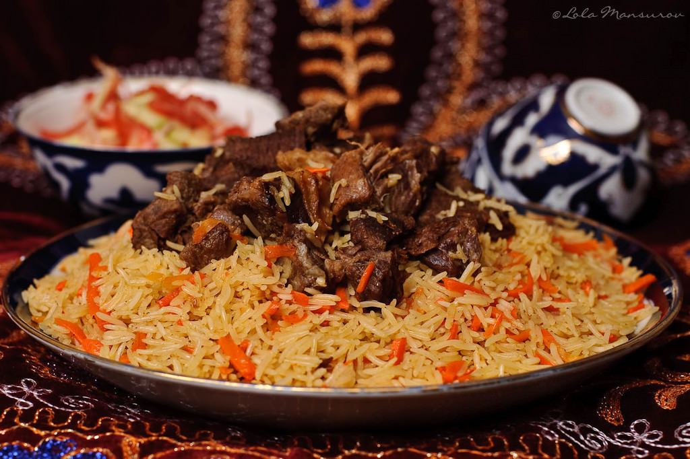

Plov

Plov is a traditional rice dish made with meat, carrots, onions, and spices.
It is popular in Central Asia and is often cooked for family meals, celebrations, and special guests.
The dish is warm, filling, and full of rich flavor.
Ingredients
- Rice
- Meat, usually lamb or beef
- Carrots
- Onion
- Garlic
- Vegetable oil
- Salt
- Black pepper
- Cumin
- Water
Cooking steps
- Wash the rice and leave it in water for a short time.
- Cut the meat, carrots, and onion.
- Heat oil in a large pot.
- Fry the onion until it becomes golden.
- Add the meat and cook until it is browned.
- Add the carrots and spices.
- Pour in water and let everything cook together.
- Add the rice on top without mixing it.
- Add garlic and cook until the rice absorbs the water.
- Cover the pot and let the plov steam until fully cooked.
- Serve hot.
Home